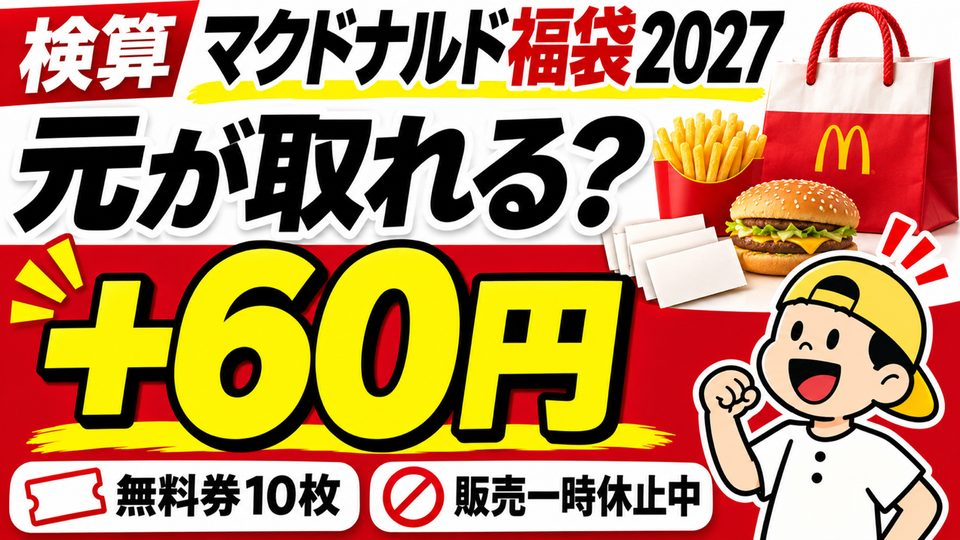
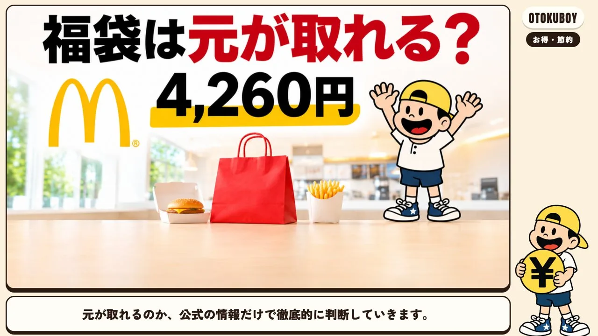
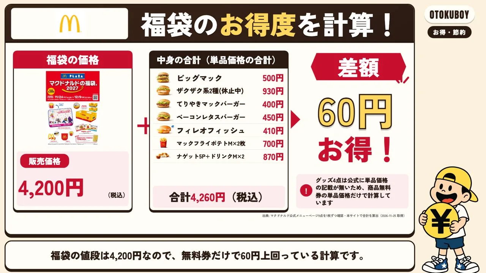
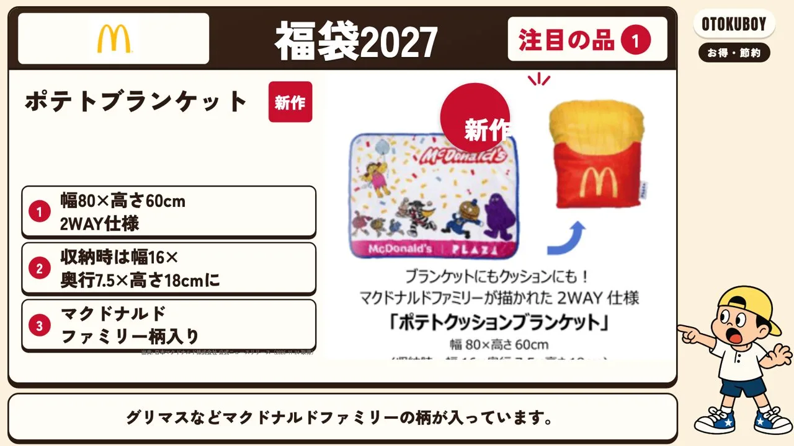
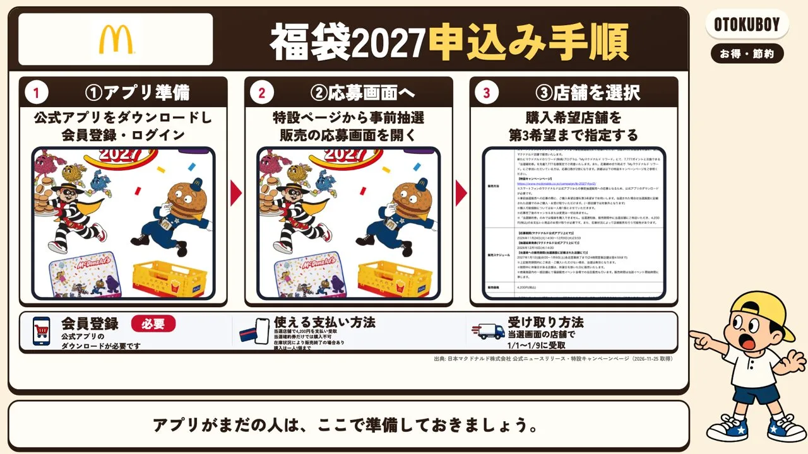

マクドナルドの福袋2027（価格4,200円・PLAZAとの初コラボ）は、商品無料券だけで「店頭販売価格最大合計4,260円相当」とされています。本当にそうなのか、公式メニューページの単品価格を1枚ずつ確認して、自分で合計を検算してみました。結論から言うと、合計はぴったり4,260円で公式発表と一致。ただし無料券10枚のうち2枚は、今まさに店頭で頼めない状態にあることもわかりました。

▶ この記事の内容を動画で見る（特集の記事）
01無料券10枚を公式メニュー価格で検算
無料券の内訳と、マクドナルド公式メニューページに掲載されている単品価格（税込）は次のとおりです。
| 無料券 | 公式単品価格 |
|---|---|
| ビッグマック×1 | 500円 |
| ザクザクジューシーマック×1 | 460円（販売休止中） |
| スパイシーザクザクジューシーマック×1 | 470円（販売休止中） |
| てりやきマックバーガー×1 | 400円 |
| ベーコンレタスバーガー×1 | 450円 |
| フィレオフィッシュ×1 | 410円 |
| マックフライポテトM×2 | 350円×2＝700円 |
| チキンマックナゲット5ピース×1 | 290円 |
| 炭酸ドリンクM×2個（無料券1枚） | 290円×2＝580円 |
| 合計 | 4,260円 |
結論単品価格を1枚ずつ合計すると4,260円になり、公式発表の「最大合計4,260円相当」と完全に一致しました。福袋代4,200円との差額は+60円です。

02無料券のうち2枚は現在「販売一時休止中」
検算の過程でわかったのが、無料券に含まれる「ザクザクジューシーマック」「スパイシーザクザクジューシーマック」の2品が、2026年11月13日から販売を一時休止しているという事実です。理由は「想定を上回る販売」によりチキンパティの安定供給が難しくなったためで、報道によれば11月末までの販売再開を見込んでいるとのことです。無料券の有効期限は2027年2月以降のため、再開を待ってから使えば問題なさそうですが、当選直後にすぐ使いたい人は注意が必要です。
注意公式の表現はあくまで「店頭販売価格最大合計4,260円相当」です。各商品ページには「一部店舗及びデリバリーでは価格が異なります」とも明記されており、差額がわずか60円しかないため、店舗によっては無料券だけでは元が取れない可能性もあります。
03グッズ4点の中身と去年との違い
今年の目玉は、畳むとマックフライポテト型のクッションに変身する「ポテトクッションブランケット」（2WAY仕様）。ほかに折りたたみミニボックス（全3色のうちランダム1つ）、スマホスタンド、小物入れが入ります。去年の福袋2026（Francfrancとの初コラボ・価格3,900円）の目玉はビッグマック形のスープジャーでした。価格は300円アップ、グッズは3点から4点に増え、無料券の総額も350円増えています。

04申込み手順
公式アプリをダウンロードして会員登録・ログインし、特設ページから応募画面を開いて、購入希望店舗を第3希望まで指定します。支払い方法を選択して入力内容を確認すれば応募完了。結果は12月16日14:00から公式アプリ内で確認できます。今年新登場の「当選確約券」（Myマクドナルドリワード7,777ポイントと交換・先着7,777名限定）を使えば抽選に必ず当選できますが、公式サイトに現在の残り枠の表示はありません。

05よくある質問
無料券だけで本当に元が取れますか？
公式メニュー価格を1枚ずつ合計すると4,260円で、福袋代4,200円を60円上回ります。ただし差はわずかで、店舗によっては届かない可能性もあります。
休止中の2品は受け取り後に使えますか？
報道では11月末までの再開見込みです。無料券の期限は2027年2月以降なので、再開を待ってから使えば問題なさそうです。
当選確約券はまだ交換できますか？
先着7,777名限定ですが、公式サイトに現在の残り枠の表示はなく、非公開です。
06まとめ
マクドナルドの福袋2027は、無料券の公式価格を検算すると福袋代をわずかに上回る内容でした。ただし差額はたった60円、無料券の2枚は現在販売休止中、店舗によって実際の価格は異なり得るという条件つきです。応募は12月9日23:59まで。中身の全部・申込み手順は動画でも詳しく解説しています。